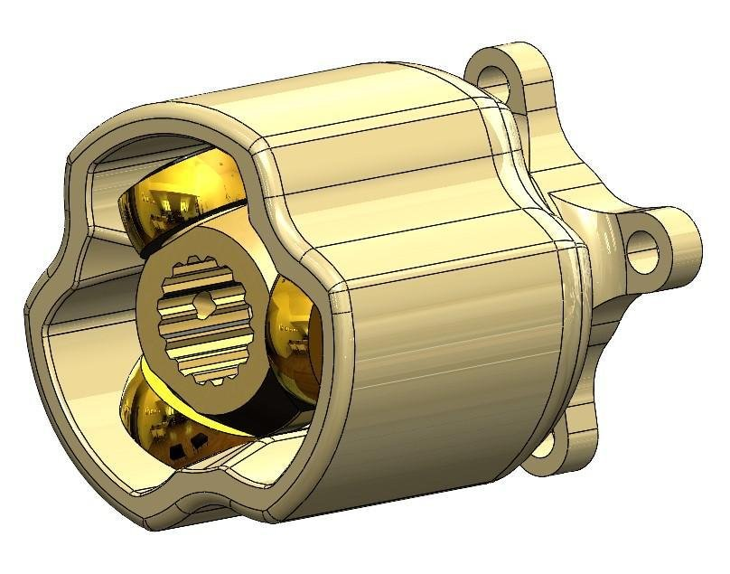

FSAE drivetrain: dual motor transmission and limited slip differential
I designed all the primary mechanical parts of an electric Formula Student car in Siemens NX, including a custom limited slip differential built into the driven sprocket. The car finished All India Rank 1 at Formula Bharat 2023.
View project